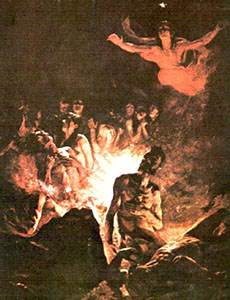

| Home | Life in Eggtopia | Chicken Week | Purchase the Word |
|---|
When Gregg, our father, was travelling the world in search of a safe space for followers of the Word, he stumbled upon the island of HHHHrgh545666TGT$R!!$$%5577666DLVT, and it was love at first sight. The island, conveniently shaped like an egg and located just southeast of Japan, was a perfect fit for the new home of the followers. Gregg purchased the island for $9,000,000, and immediately began the required construction. As stated on the homepage, Eggtopia was completed by 1961, and all followers were immediately transported there to begin new lives as Eggtopian citizens. Since then, those who have wished to convert to the Word of Egg have immigrated to Eggtopia in a very quick process that requires one signature.
Eggtopia consists of four states, those being:
To qualify for life in Suburb, one must complete their Prayer Proximation, which fully establishes them as One With Egg. People who achieve this and have children will send their children to City once they reach the age of 18. They will then begin their own journey to Proximation and immediately start working for the Eggtopian government. While everybody in Eggtopia visits the Egg Temple to pay their dues, Proximation is a rigorous practice that truly unites human and egg. Completion takes a minimum of two decades, so as a result, Suburb has a very small population consisting of only the most elite Eggtopians. Not everyone is able to make it to Suburb, so they sometimes live their entire lives in City.
Suburb surrounds City. As stated above, the community houses only a small percentage of Eggtopian citizens, where they commute to City and continue working for the Eggtopian government until they are forced into retirement at the age of 85. Life in Suburb is rather quiet and peaceful, so children born into those familes are often able to perform better in school. Things in Suburb are funded slighly better than things in City, and this works as an incentive for people to finish their Proximation.
City is where the majority of native Eggtopians reside. Whether they were born there or newly entered in from Suburb to complete their Proximation, they live in the various apartment buildings and do daily work for the Eggtopian government. Life in the city is very loud due to the large population. It is also very crowded.
City is the heart of Eggtopia. All government buildings (except Capitol) are located here, as well as the majority of the population. City has the most to do, with both Eggmart locations and government-funded entertainment endeavors being abundant, and with that, City really lights up at night. People from Suburb often visit City for this exact reason.
New Jersey is where all incoming immigrants to Eggtopia are sent. In New Jersey, they spend ten years living a primal lifestyle as a means of proving their worth to the Word of Egg. Residents do not live in homes, nor do they work for the Eggtopian government. Instead, they fill the jobs at Eggmart, working from Wednesday to Sunday. Because Tuesday is the day of prayer, Eggmart (and anything else) is closed, and the residents of New Jersey participate at their own church before ending the day with rigorous community service.
While the above might sound tough, it is important as it proves the worth and value of incoming Eggtopian citizens. At the end of their ten years of duty, they are converted to a full Eggtopian citizen and they are given housing in City, where they can now work for the Eggtopian government and work toward their Proximation provided they are at least 18.
Capitol is exclusive to top members of the Eggtopian government. It is where executive decisions get made regarding the good of the nation, and ordinary citizens are restricted from accessing it due to security reasons.
Capitol consists of the sole Capitol building, where Phil McEgg resides with his family. Like Capitol itself, Phil and his family are kept isolated for security reasons. It is important to note that attempted entry into Capitol will result in immediate consequence.
As said eariler, immigrating to Eggtopia takes only one signature.
Simply book a flight to Eggtopia, and from there, you will be prompted with a mandatory immigration signature upon arrival. You cannot leave upon arrival to Eggtopia. Signing the immigration form signs your life to that of the Eggtopian nation, and we stress it due to numerous mishaps with tourists.
Come to Eggtopia today!